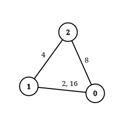
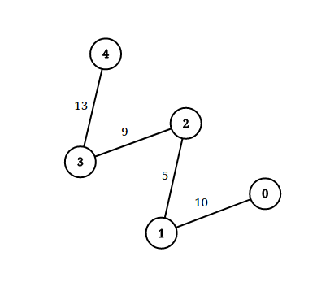

| Category | Difficulty | Likes | Dislikes |
|---|---|---|---|
| Algorithms | Hard | 2079 | 48 |
array | two-pointers | union-find | graph | sorting
google
An undirected graph of n nodes is defined by edgeList, where edgeList[i] = [ui, vi, disi] denotes an edge between nodes ui and vi with distance disi. Note that there may be multiple edges between two nodes.
Given an array queries, where queries[j] = [pj, qj, limitj], your task is to determine for each queries[j] whether there is a path between pj and qj such that each edge on the path has a distance strictly less than limitj .
Return a boolean array answer, where answer.length == queries.length and the jth value of answer is true if there is a path for queries[j] is true, and false otherwise.
Example 1:

Input: n = 3, edgeList = [[0,1,2],[1,2,4],[2,0,8],[1,0,16]], queries = [[0,1,2],[0,2,5]]
Output: [false,true]
Explanation: The above figure shows the given graph. Note that there are two overlapping edges between 0 and 1 with distances 2 and 16.
For the first query, between 0 and 1 there is no path where each distance is less than 2, thus we return false for this query.
For the second query, there is a path (0 -> 1 -> 2) of two edges with distances less than 5, thus we return true for this query.Example 2:

Input: n = 5, edgeList = [[0,1,10],[1,2,5],[2,3,9],[3,4,13]], queries = [[0,4,14],[1,4,13]]
Output: [true,false]
Explanation: The above figure shows the given graph.
Constraints:
2 <= n <= 1051 <= edgeList.length, queries.length <= 105edgeList[i].length == 3queries[j].length == 30 <= ui, vi, pj, qj <= n - 1ui != vipj != qj1 <= disi, limitj <= 109